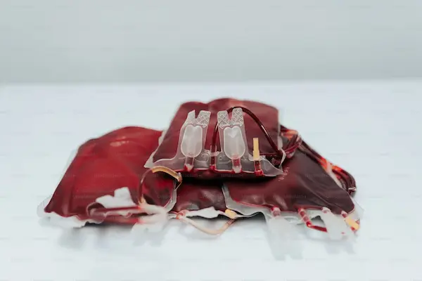

Nossos Projetos
A ONG Hemora desenvolve projetos sociais voltados para a promoção da saúde e do bem-estar da comunidade, com foco especial na doação de sangue e campanhas educativas.

A ONG Hemora desenvolve projetos sociais voltados para a promoção da saúde e do bem-estar da comunidade, com foco especial na doação de sangue e campanhas educativas.
Participe como voluntário e ajude a transformar vidas! Nossos voluntários atuam em campanhas, eventos e ações de conscientização. Cadastre-se e faça parte dessa corrente do bem.
Para doar sangue, basta comparecer a um dos nossos pontos de coleta parceiros. Siga as orientações em nosso site e ajude a salvar vidas. Sua doação faz a diferença!